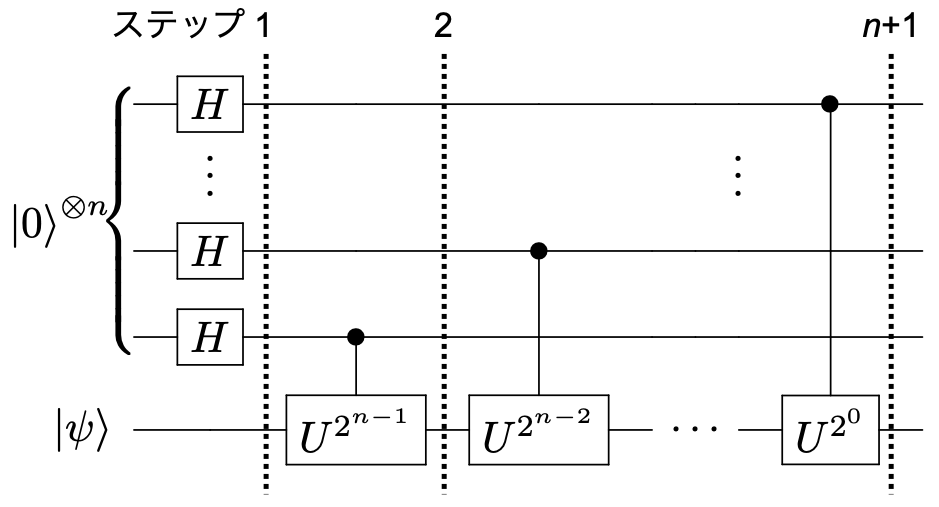
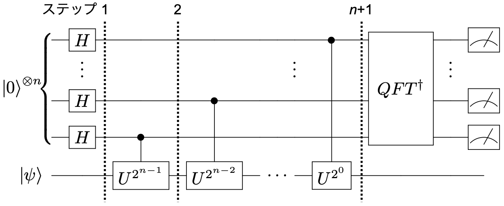

ショアの素因数分解アルゴリズムを学習する¶
ここではショアのアルゴリズムを学習します。アルゴリズムの元になっている量子位相推定の手法を学んだ後、ショアのアルゴリズムの各ステップを実例とともに紹介します。最後に、Qiskitを使用してショアのアルゴリズムを実装し、実際に素因数分解を行ってみます。
目次
はじめに ¶
古典計算の能力をはるかに上回る量子計算の一つの例として、最も有名なものがショアの量子計算アルゴリズムでしょう。このアルゴリズムは、大きな正の数を二つの素数の積に分解するというものです。古典計算では素因数分解の有効なアルゴリズムが知られておらず、数が大きくなると指数関数的に計算量が増えると予想されています。ショアのアルゴリズムを用いれば、同じ問題を多項式時間で解くことができると考えられています。 古典計算での素因数分解の難しさは鍵暗号技術の元になっており、指数関数的に高速なショアのアルゴリズムが大きく注目される理由もそこにあります。
量子位相推定 ¶
まず、ショアのアルゴリズムの元になっている「量子位相推定」（Quantum Phase Estimation, QPE）と呼ばれる手法について学びましょう（実際、ショアのアルゴリズムはほぼQPEそのものであることが追々分かります）。 QPEの理解には**「量子フーリエ変換」**（Quantum Fourier Transform, QFT）の理解が欠かせませんが、QFTについてはXXを参照してください。 QPEが考える問題は、あるユニタリー演算\(U\)に対して\(U|\psi\rangle=e^{2\pi i\theta}|\psi\rangle\)となる固有ベクトル\(|\psi\rangle\)が与えられるとして、その固有値\(e^{2\pi i\theta}\)の位相\(\theta\)を求めることができるか？という問題です。
1量子ビットの位相推定 ¶
まず、下図にあるような量子回路を考えてみましょう。

この場合、量子回路のステップ 1-3での量子状態は以下のようになります。
ステップ 1 : \(\frac{1}{\sqrt{2}}(|0\rangle|\psi\rangle+|1\rangle|\psi\rangle)\)
ステップ 2 : \(\frac{1}{\sqrt{2}}(|0\rangle|\psi\rangle+|1\rangle e^{2\pi i\theta}|\psi\rangle)\)
ステップ 3 : \(\frac{1}{2}\left[(1+e^{2\pi i\theta})|0\rangle+(1-e^{2\pi i\theta})|1\rangle\right]\)
この状態で上側の量子ビットを測定すると、\(|(1+e^{2\pi i\theta})/2|^2\)の確率で0、\(|(1-e^{2\pi i\theta})/2|^2\)の確率で1を測定するでしょう。つまり、この確率の値から位相\(\theta\)を求めることができるわけです。 しかし、\(\theta\)の値が小さい場合、ほぼ100%の確率で0を、ほぼ0％の確率で1を測定することになるため、100%あるいは0%からのずれを精度良く決めるためには多数回の測定が必要になります。
\(n\)量子ビットの位相推定 ¶
そこで、上側のレジスタを\(n\)量子ビットに拡張した量子回路（下図）を考えてみましょう。
準備として、\(U^{2^x}|\psi\rangle\)が以下のように書けることに留意しておきます。
この量子回路のステップ 1, 2, … \(n+1\)での量子状態は以下のようになります。
ステップ 1 : \(\frac{1}{\sqrt{2^n}}(|0\rangle+|1\rangle)^{\otimes n}|\psi\rangle\)
ステップ 2 : \(\frac{1}{\sqrt{2^n}}(|0\rangle+e^{2\pi i\theta2^{n-1}}|1\rangle)(|0\rangle+|1\rangle)^{\otimes n-1}|\psi\rangle\)
\(\cdots\)
ステップ \(n+1\) : \(\frac{1}{\sqrt{2^n}}(|0\rangle+e^{2\pi i\theta2^{n-1}}|1\rangle)(|0\rangle+e^{2\pi i\theta2^{n-2}}|1\rangle)\cdots(|0\rangle+e^{2\pi i\theta2^0}|1\rangle)|\psi\rangle\)
ステップ \(n+1\)後の\(n\)ビットレジスタの状態は、QFTで\(j\)を\(2^n\theta\)としたものと同等であることが分かります。つまり、この\(n\)ビットレジスタに逆フーリエ変換\(\rm{QFT}^\dagger\)を施せば、状態\(|2^n\theta\rangle\)が得られることになります。この状態を測定することで\(2^n\theta\)、つまり固有値の位相\(\theta\)（を\(2^n\)倍したもの）を求めることができる、というのがQPEです（下図）。
ショアのアルゴリズム ¶
では、ショアのアルゴリズムの本題に入っていきましょう。ショアのアルゴリズムが考えるのは「ある正の合成数\(N\)を、自明ではない素数の積\(N=qp\)に分解する」という問題です。
まず、整数の剰余についての表記法をおさらいしておきます。以下のような整数の並び\(x\)を考えたとき、例えば3で割った余りを\(y\)とすると
x |
0 |
1 |
2 |
3 |
4 |
5 |
6 |
7 |
8 |
9 |
|---|---|---|---|---|---|---|---|---|---|---|
y |
0 |
1 |
2 |
0 |
1 |
2 |
0 |
1 |
2 |
0 |
になります。この時、\(x=y\;(\text{mod}\;3)\)と書くものとします（\(k\)を0以上の整数とすれば、\(x=3k+y\)と書くこともできます）。
ショアのアルゴリズムの流れを書くと、以下のようなフローチャートになります。黒字の部分は古典計算で実行し、青地の部分を量子コンピュータで実行することになります。アルゴリズムの一部でしか量子計算を使わないわけですが、この青地の部分を古典計算で実行するのが難しいわけですが、その理由は追々明らかになります。

素因数分解の例 ¶
簡単な例として、\(N=15\)の素因数分解をこのアルゴリズムに沿って考えてみましょう。
例えば、15に素な数として\(a=7\)を選んだとします。そこで\(7^x\)を15で割った余りを\(y\)とすると
x |
0 |
1 |
2 |
3 |
4 |
5 |
6 |
\(\cdots\) |
|---|---|---|---|---|---|---|---|---|
y |
1 |
7 |
4 |
13 |
1 |
7 |
4 |
\(\cdots\) |
のようになります。つまり、\(7^r=1\;(\text{mod}\;15)\)を満たす最小の\(r\)は4になることが分かります。 \(r=4\)は偶数なので、\(x\equiv7^{4/2}\; (\text{mod}\; 15)=4\)と定義すると、\(x+1=5\neq0\;(\text{mod}\; 15)\)なので、
となって、\(15=5\times3\)が得られました。
量子回路 ¶
\(N=15\)の素因数分解を実装する量子回路は、以下のような構成をしています。

{kind=link}
{kind=link}
上段にある4個の量子ビットが測定用のレジスタ、下段の4個の量子ビットが作業用のレジスタに対応します。それぞれのレジスタが4つづつなのは、15が4ビット（\(n=4\)）で表現できるからです（15の2進数表記 = [1111]）。状態は全て\(|0\rangle\)に初期化されているものとして、測定用ビットの状態を\(|x\rangle\)、作業用ビットの状態を\(|w\rangle\)とします。 \(U_f\)は以下のようなオラクル

で、作業用ビットの出力状態が\(|w\oplus f(x)\rangle\)になるものと理解しておきます（詳細は後で説明します）。関数\(f(x)\)は\(f(x)\equiv a^x\;(\text{mod}\;N)\)で定義されるものとします。
では、回路のステップ 1-5ごとに量子状態を見ていきましょう。
ステップ 1 : $\(\frac{1}{\sqrt{2^4}}\left[\sum_{j=0}^{2^4-1}|j\rangle\right]|0\rangle^{\otimes 4} = \frac{1}{4}\left[|0\rangle+|1\rangle+\cdots+|15\rangle\right]|0\rangle^{\otimes 4}\)$
ステップ 2 : $\( \begin{aligned} &\frac{1}{4}\left[|0\rangle|0\oplus7^0\;(\text{mod}\;15)\rangle+|1\rangle|0\oplus7^1\;(\text{mod}\;15)\rangle+\cdots+|15\rangle|0\oplus7^{15}\;(\text{mod}\;15)\rangle\right]\\ =&\frac{1}{4}\left[|0\rangle|1\rangle+|1\rangle|7\rangle+|2\rangle|4\rangle+|3\rangle|13\rangle+|4\rangle|1\rangle+\cdots+|15\rangle|13\rangle\right] \end{aligned} \)$
ステップ 2の後に作業用ビットを測定します。\(|w\rangle\)は\(|1\rangle\), \(|7\rangle\), \(|4\rangle\), \(|13\rangle\)のどれかなので、例えば測定の結果13が得られたとします。その場合
ステップ 3 : \(\frac{1}{2}\left[|3\rangle+|7\rangle+|11\rangle+|15\rangle\right]\)
となります。次に、測定用ビットに逆フーリエ変換\(\rm{QFT}^\dagger\)を適用します。逆フーリエ変換はある状態\(|j\rangle\)を\(|j\rangle \to \frac{1}{\sqrt{N}}\sum_{k=0}^{N-1}e^{\frac{-2\pi ijk}{N}}|k\rangle\)に変換するので、
ステップ 4 : $\( \begin{aligned} &\frac{1}{2}QFT^\dagger\left[|3\rangle+|7\rangle+|11\rangle+|15\rangle\right]\\ =&\frac{1}{2}\frac1{\sqrt{2^4}}\sum_{k=0}^{2^4-1}\left[e^{\frac{-2\pi i\cdot3k}{2^4}}+e^{\frac{-2\pi i\cdot7k}{2^4}}+e^{\frac{-2\pi i\cdot11k}{2^4}}+e^{\frac{-2\pi i\cdot15k}{2^4}}\right]|k\rangle\\ =&\frac{1}{8}\left[4|0\rangle+4i|4\rangle-4|8\rangle-4i|12\rangle\right] \end{aligned} \)$
ステップ 5 : 測定用ビットを測定すると、0, 4, 8, 12がそれぞれ1/4の確率で得られます。
ステップ 2で\(7^x\;(\text{mod}\;15)\)を計算しているので想像がつきますが、すでに繰り返しの兆候が現れていますね。
測定結果の解析 ¶
この測定結果の意味を考察してみましょう。ショアのアルゴリズムの回路と\(n\)量子ビット位相推定の回路の類似性から、ここではこの2つが同一の働きをするものと仮定してみます（以下で補足説明します）。その場合、測定用レジスタは固有値\(e^{2\pi i\theta}\)の位相\(\theta\)を\(2^4=16\)倍したものになっているはずです。つまり、例えば測定用レジスタが4の場合、位相\(\theta\)は\(\theta=4/16=0.25\)です。この位相は何を意味しているのでしょうか？
ショアのアルゴリズムの量子回路として、私たちは\(|w\rangle=|0\rangle^{\otimes n}\)を初期状態として\(U_f|x\rangle|w\rangle=|x\rangle|w\oplus f(x)\rangle\) \((f(x)\equiv a^x\;(\text{mod}\;N))\) となるオラクル\(U_f\)を考えました。この\(U_f\)を実装するために、以下のようなユニタリー演算子を考えてみます。
このユニタリーは、\(m=1\)のとき\(U|1\rangle=|a\;(\text{mod}\;N)\rangle\)になるので、\(w=0\)とした\(U_f|x\rangle|0\rangle\)を\(U\)を使って実装することができます。
ここで
（\(s\)は\(0<s<r-1\)の整数）となるベクトル\(|\psi_s\rangle\)を定義すると、
が導けると同時に、\(|\psi_s\rangle\)は\(U\)の固有ベクトルであり、固有値\(e^{2\pi is/r}\)を持つことが分かります。
つまり、ショアのアルゴリズムのオラクル\(U_f\)による操作は、固有値\(e^{2\pi is/r}\)を持つ固有ベクトル\(|\psi_s\rangle\)の重ね合わせ状態\(|1\rangle\)にユニタリー\(U\)を\(x\)回適用することと同等であり、その後に逆QFTを掛けるということは、まさにQPEの操作を行っていることに対応しています。
QPEで導出する位相を思い出すと、それは\(U|\psi\rangle=e^{2\pi i\theta}|\psi\rangle\)なるユニタリー演算\(U\)と固有ベクトル\(|\psi\rangle\)に対する固有値\(e^{2\pi i\theta}\)に含まれる位相\(\theta\)でした。以上のことから、ショアのアルゴリズムから得られる位相\(\theta\)は、\(s/r\)（の整数倍）の意味を持つことも分かるでしょう。
連分数展開 ¶
以上の考察から、測定の結果得られる位相は\(\theta \approx s/r\)であることが分かりました。この結果から位数\(r\)を求めるために、連分数展開という手法を使います。詳細は文献[]に委ねますが、この手法を使うことで\(\theta\)に最も近い分数として\(s/r\)を求めることができます。
例えば\(\theta=0.25\)の場合、\(r=4\)が得られます（少ないですが\(r=8\)が得られる可能性もあります）。ここまでできれば、あとは古典計算のみで求める素因数に分解することができますね（ここを参照）。
剰余指数化 ¶
オラクル\(U_f\)による操作\(U_f|x\rangle|w\rangle=|x\rangle|w\oplus f(x)\rangle\)をもう少し考えてみましょう。\(f(x)\equiv a^x\;(\text{mod}\;N)\)は、\(x\)の2進数表記
を使って
と書くことができます。つまり、この関数は以下のようなユニタリー演算を考えれば実装することができます。

\(n\)量子ビットQPEの回路と比較すれば、このユニタリーはQPEの\(U^{2^x}\)演算を実装しているものだと分かるでしょう。このように、第2レジスタ（上図では一番下のワイヤに繋がるレジスタ）の内容に\(a^x\;(\text{mod}\;N)\)を掛けてQPEの\(U^{2^x}\)演算を実現する手法を、剰余指数化と呼びます。
アルゴリズムの実装 ¶
ここから、ショアのアルゴリズムを実装していきます。
# Tested with python 3.7.9, qiskit 0.23.5, numpy 1.20.1
# tabulate 0.8.7 needed
import matplotlib.pyplot as plt
import numpy as np
from qiskit import QuantumCircuit, Aer, execute
from qiskit.visualization import plot_histogram
from math import gcd
from numpy.random import randint
from tabulate import tabulate
from fractions import Fraction
位数の発見 ¶
まず最初に、繰り返しの位数（周期）を発見するアルゴリズムを見てみます。
\(N\)を正の整数として、関数\(f(x)=a^x\;(\text{mod}\;N)\)の振る舞いを見ます。ここで、\(a\)は\(N\)と互いに素な\(N\)未満の正の整数で、位数\(r\)は\(a^r=1\;(\text{mod}\;N)\)を満たす非ゼロの最小の整数です。 以下のグラフにこの関数の例を示します。 ポイント間の線は周期性を確認するためのものであり、x印の間の中間値を表していないことに注意してください。
N = 35
a = 3
# プロットするデータを計算する
xvals = np.arange(35)
yvals = [np.mod(a**x, N) for x in xvals]
# matplotlibを使って描画
fig, ax = plt.subplots()
ax.plot(xvals, yvals, linewidth=1, linestyle='dotted', marker='x')
ax.set(xlabel='$x$', ylabel='$%i^x$ mod $%i$' % (a, N),
title="Example of Periodic Function in Shor's Algorithm")
try: # グラフ上にrをプロット
r = yvals[1:].index(1) +1
plt.annotate(text='', xy=(0,1), xytext=(r,1), arrowprops=dict(arrowstyle='<->'))
plt.annotate(text='$r=%i$' % r, xy=(r/3,1.5))
except:
print('Could not find period, check a < N and have no common factors.')
オラクルの実装 ¶
以下では、\(N=15\)を素因数に分解してみます。まず上で説明したように、\(U|m\rangle=|am\;(\text{mod}\;N)\rangle\)となるユニタリーを\(x\)回繰り返すことで、オラクル\(U_f\)を実装します。\(U|m\rangle=|am\;(\text{mod}\;N)\rangle\)を実装する関数U_amod15は以下のようになります。
def c_amod15(a, power):
"""mod 15による制御ゲートをかける"""
if a not in [2,7,8,11,13]:
raise ValueError("'a' must be 2,7,8,11 or 13")
U = QuantumCircuit(4)
for iteration in range(power):
if a in [2,13]:
U.swap(0,1)
U.swap(1,2)
U.swap(2,3)
if a in [7,8]:
U.swap(2,3)
U.swap(1,2)
U.swap(0,1)
if a == 11:
U.swap(1,3)
U.swap(0,2)
if a in [7,11,13]:
for q in range(4):
U.x(q)
U = U.to_gate()
U.name = "%i^%i mod 15" % (a, power)
c_U = U.control()
return c_U
\(\tt{power}\)が繰り返しの回数になります。
回路全体の実装 ¶
測定用ビットとして、8量子ビットを使います。
# Specify variables
n_count = 8 # number of counting qubits
a = 7
次に、逆QFTの回路を与えます（量子フーリエ変換の詳細についてはXXを参照）。
def qft_dagger(n):
"""n量子ビットの逆QFTを回路の最初のn量子ビットにかける"""
qc = QuantumCircuit(n)
# Swapsを忘れない!
for qubit in range(n//2):
qc.swap(qubit, n-qubit-1)
for j in range(n):
for m in range(j):
qc.cu1(-np.pi/float(2**(j-m)), m, j)
qc.h(j)
qc.name = "QFT^dagger"
return qc
ショアのアルゴリズムを実装する量子回路は、以上の要素を使って構築することができます。
# n_count個の測定用量子ビットと、Uを操作するための4つの作業用量子ビットで量子回路を作る
qc = QuantumCircuit(n_count+4, n_count)
# 測定用量子ビットにHゲートをかけて初期化
qc.h(list(range(n_count)))
# 最後の作業用量子ビットを|1>の状態にする
qc.x(3+n_count)
# 制御Uを適用
for q in range(n_count):
qc.append(c_amod15(a, 2**q), [q]+[i+n_count for i in range(4)])
# 逆QFTを適用
qc.append(qft_dagger(n_count), list(range(n_count)))
# 回路を測定
qc.measure(list(range(n_count)), list(range(n_count)))
qc.draw('text')
<ipython-input-5-14d320fe0c24>:9: DeprecationWarning: The QuantumCircuit.cu1 method is deprecated as of 0.16.0. It will be removed no earlier than 3 months after the release date. You should use the QuantumCircuit.cp method instead, which acts identically.
qc.cu1(-np.pi/float(2**(j-m)), m, j)
┌───┐ »
q_0: ┤ H ├───────■────────────────────────────────────────────────────»
├───┤ │ »
q_1: ┤ H ├───────┼──────────────■─────────────────────────────────────»
├───┤ │ │ »
q_2: ┤ H ├───────┼──────────────┼──────────────■──────────────────────»
├───┤ │ │ │ »
q_3: ┤ H ├───────┼──────────────┼──────────────┼──────────────■───────»
├───┤ │ │ │ │ »
q_4: ┤ H ├───────┼──────────────┼──────────────┼──────────────┼───────»
├───┤ │ │ │ │ »
q_5: ┤ H ├───────┼──────────────┼──────────────┼──────────────┼───────»
├───┤ │ │ │ │ »
q_6: ┤ H ├───────┼──────────────┼──────────────┼──────────────┼───────»
├───┤ │ │ │ │ »
q_7: ┤ H ├───────┼──────────────┼──────────────┼──────────────┼───────»
└───┘┌──────┴──────┐┌──────┴──────┐┌──────┴──────┐┌──────┴──────┐»
q_8: ─────┤0 ├┤0 ├┤0 ├┤0 ├»
│ ││ ││ ││ │»
q_9: ─────┤1 ├┤1 ├┤1 ├┤1 ├»
│ 7^1 mod 15 ││ 7^2 mod 15 ││ 7^4 mod 15 ││ 7^8 mod 15 │»
q_10: ─────┤2 ├┤2 ├┤2 ├┤2 ├»
┌───┐│ ││ ││ ││ │»
q_11: ┤ X ├┤3 ├┤3 ├┤3 ├┤3 ├»
└───┘└─────────────┘└─────────────┘└─────────────┘└─────────────┘»
c: 8/═════════════════════════════════════════════════════════════════»
»
« »
« q_0: ─────────────────────────────────────────────────────────────────»
« »
« q_1: ─────────────────────────────────────────────────────────────────»
« »
« q_2: ─────────────────────────────────────────────────────────────────»
« »
« q_3: ─────────────────────────────────────────────────────────────────»
« »
« q_4: ───────■─────────────────────────────────────────────────────────»
« │ »
« q_5: ───────┼───────────────■─────────────────────────────────────────»
« │ │ »
« q_6: ───────┼───────────────┼───────────────■─────────────────────────»
« │ │ │ »
« q_7: ───────┼───────────────┼───────────────┼────────────────■────────»
« ┌──────┴───────┐┌──────┴───────┐┌──────┴───────┐┌───────┴───────┐»
« q_8: ┤0 ├┤0 ├┤0 ├┤0 ├»
« │ ││ ││ ││ │»
« q_9: ┤1 ├┤1 ├┤1 ├┤1 ├»
« │ 7^16 mod 15 ││ 7^32 mod 15 ││ 7^64 mod 15 ││ 7^128 mod 15 │»
«q_10: ┤2 ├┤2 ├┤2 ├┤2 ├»
« │ ││ ││ ││ │»
«q_11: ┤3 ├┤3 ├┤3 ├┤3 ├»
« └──────────────┘└──────────────┘└──────────────┘└───────────────┘»
« c: 8/═════════════════════════════════════════════════════════════════»
« »
« ┌─────────────┐┌─┐
« q_0: ┤0 ├┤M├─────────────────────
« │ │└╥┘┌─┐
« q_1: ┤1 ├─╫─┤M├──────────────────
« │ │ ║ └╥┘┌─┐
« q_2: ┤2 ├─╫──╫─┤M├───────────────
« │ │ ║ ║ └╥┘┌─┐
« q_3: ┤3 ├─╫──╫──╫─┤M├────────────
« │ QFT^dagger │ ║ ║ ║ └╥┘┌─┐
« q_4: ┤4 ├─╫──╫──╫──╫─┤M├─────────
« │ │ ║ ║ ║ ║ └╥┘┌─┐
« q_5: ┤5 ├─╫──╫──╫──╫──╫─┤M├──────
« │ │ ║ ║ ║ ║ ║ └╥┘┌─┐
« q_6: ┤6 ├─╫──╫──╫──╫──╫──╫─┤M├───
« │ │ ║ ║ ║ ║ ║ ║ └╥┘┌─┐
« q_7: ┤7 ├─╫──╫──╫──╫──╫──╫──╫─┤M├
« └─────────────┘ ║ ║ ║ ║ ║ ║ ║ └╥┘
« q_8: ────────────────╫──╫──╫──╫──╫──╫──╫──╫─
« ║ ║ ║ ║ ║ ║ ║ ║
« q_9: ────────────────╫──╫──╫──╫──╫──╫──╫──╫─
« ║ ║ ║ ║ ║ ║ ║ ║
«q_10: ────────────────╫──╫──╫──╫──╫──╫──╫──╫─
« ║ ║ ║ ║ ║ ║ ║ ║
«q_11: ────────────────╫──╫──╫──╫──╫──╫──╫──╫─
« ║ ║ ║ ║ ║ ║ ║ ║
« c: 8/════════════════╩══╩══╩══╩══╩══╩══╩══╩═
« 0 1 2 3 4 5 6 7 シミュレータで実行して、結果を確認してみます。
backend = Aer.get_backend('qasm_simulator')
results = execute(qc, backend, shots=2048).result()
answer = results.get_counts()
def show_distribution(answer):
n = len(answer)
x = [int(key,2) for key in list(answer.keys())]
y = list(answer.values())
fig, ax = plt.subplots()
rect = ax.bar(x,y)
def autolabel(rects):
for rect in rects:
height = rect.get_height()
ax.annotate('{:.3f}'.format(height/sum(y)),
xy=(rect.get_x()+rect.get_width()/2, height),xytext=(0,0),
textcoords="offset points",ha='center', va='bottom')
autolabel(rect)
plt.ylabel('Probabilities')
plt.show()
show_distribution(answer)
計算結果の解析 ¶
出力された結果から、位相を求めてみます。
rows, measured_phases = [], []
for output in answer:
decimal = int(output, 2) # 10進数に変換
phase = decimal/(2**n_count)
measured_phases.append(phase)
# これらの値をテーブルの行に追加します：
rows.append(["%i" % (decimal),
"%i/%i = %.2f" % (decimal, 2**n_count, phase)])
# tabulateを使って、ASCIIテーブルとして行を印刷します：
print(tabulate(rows,
headers=["Register Output (Dec)", "Phase"],
colalign=("right","right")))
Register Output (Dec) Phase
----------------------- --------------
0 0/256 = 0.00
64 64/256 = 0.25
128 128/256 = 0.50
192 192/256 = 0.75
得られた位相の情報から、連分数アルゴリズムを使用して\(s\)と\(r\)を見つけることができます。Pythonの組み込みのfractions(分数)モジュールを使用して、小数をFractionオブジェクトに変換できます。
rows = []
for phase in measured_phases:
frac = Fraction(phase).limit_denominator(15)
rows.append([phase, "%i/%i" % (frac.numerator, frac.denominator), frac.denominator])
# ASCIIテーブルを表示
print(tabulate(rows,
headers=["Phase", "Fraction", "Guess for r"],
colalign=('right','right','right')))
Phase Fraction Guess for r
------- ---------- -------------
0 0/1 1
0.25 1/4 4
0.5 1/2 2
0.75 3/4 4
limit_denominatorメソッドを使って、分母が特定の値（ここでは15）を下回る分数で、最も位相の値に近いものを得ています。
測定された結果のうち、2つ（64と192）が正しい答えである\(r=4\)を与えたことが分かります。